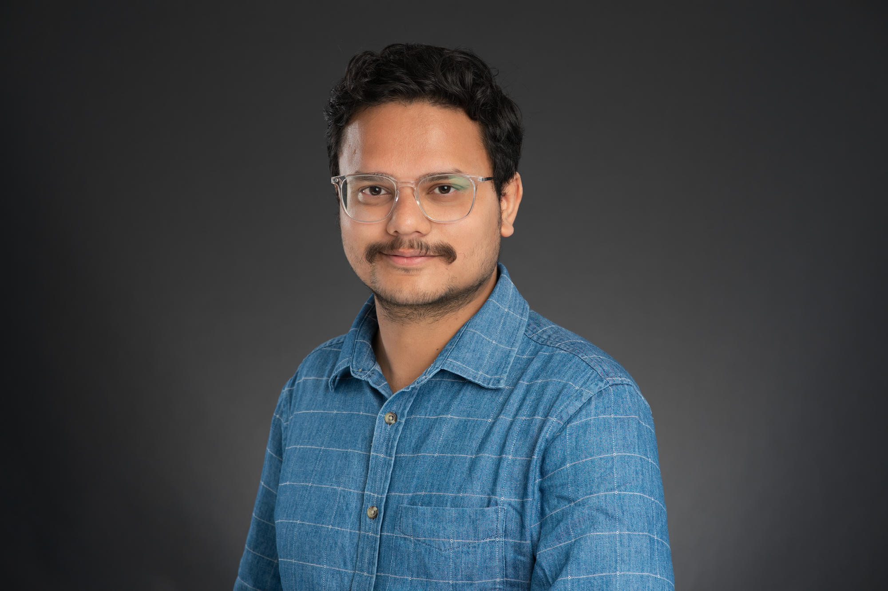

AI for multimodal neuroimaging
Self-supervised and deep learning approaches for fMRI, EEG, and fNIRS representations.
AI · Cognitive Science · Neuroimaging
I am a Postdoctoral Research Associate at St. Jude Children's Research Hospital, where I develop computational methods for multimodal brain imaging, sleep neuroscience, and pediatric brain health.

Research focus
My work combines AI with EEG, fNIRS, and fMRI to study brain dynamics across sleep, cognition, pediatric cancer survivorship, and neuromodulation.
Self-supervised and deep learning approaches for fMRI, EEG, and fNIRS representations.
Neurophysiological markers of sleep and memory in long-term pediatric cancer survivors.
Functional connectivity, real-time fMRI neurofeedback, and focused-ultrasound simulation.
Selected work
Jesyin Lai*, Pankaj Pandey*, Andrea Sanchez-Corzo et al.
Frontiers in Neuroscience · *Equal contribution
Josue Luiz Dalboni da Rocha, Jesyin Lai, Pankaj Pandey et al.
Cancers, 17(4), 622
Pankaj Pandey, John McLinden, Neela Rahimi et al.
Engineering Applications of Artificial Intelligence, 137, 109256
Beyond research
I support interdisciplinary training through classroom instruction, project mentorship, peer review, outreach, and open scientific resources.
Experience teaching machine learning, computational neuroscience, cognition and computation, and mentoring emerging researchers across institutions.
View teaching and mentoring →Journal and conference reviewing, Sci-ROI volunteering, research outreach leadership, funded grant development, and scientific presentations.
View service and leadership →Collaboration
I welcome conversations about collaborative research, open-source methods, mentoring, and opportunities at the intersection of AI and human neuroscience.
Get in touch